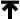

| 技巧 |
 |
 |
 |
出于泛型性的考虑, 最好把函数对象的成员 operator() 做成模板. 这样, 只要行为合适, 我们就不必操心期望的实参类型. 例如, 与其把 char const* 硬编码为泛型语义动作的实参, 不如把它做成模板成员函数. 这样它可以接受任何类型的迭代器:
struct my_functor
{
template <typename IteratorT>
void operator()(IteratorT first, IteratorT last) const;
};注意, 这只有函数对象才能做到. 模板函数无法作为语义动作传入, 除非把它转型为正确的函数签名; 那样的话, 你就 单态化(monomorphize)了该函数. 这清楚地表明函数对象优于普通函数.
自 v1.8.0 起, 规则可以使用一个或多个扫描器类型. 例如, 有些情况下我们需要一条既能在短语层面又能在字符层面工作的规则. 规则/扫描器不匹配一直是令人困惑的根源, 是排名第一的 FAQ. 为解决这一问题, 我们现在有了 多扫描器支持.
下面是一个文法示例, 其中规则 r 可以用 3 种扫描器调用(短语层面, lexeme 和小写). 更多信息见 rule, grammar, lexeme_scanner 和 as_lower_scanner .
下面是文法(见 multiple_scanners.cpp):
struct my_grammar : grammar<my_grammar> { template <typename ScannerT> struct definition { definition(my_grammar const& self) { r = lower_p; rr = +(lexeme_d[r] >> as_lower_d[r] >> r); } typedef scanner_list< ScannerT , typename lexeme_scanner<ScannerT>::type , typename as_lower_scanner<ScannerT>::type > scanners; rule<scanners> r; rule<ScannerT> rr; rule<ScannerT> const& start() const { return rr; } }; };
默认情况下, 多扫描器支持是禁用的. 必须把宏 BOOST_SPIRIT_RULE_SCANNERTYPE_LIMIT 定义为 scanner_list 中允许的最大扫描器数. 该值必须大于 1 才能启用多扫描器. 以上面的示例为例, 要把列表的扫描器上限定义为三个, 必须在包含 Spirit 头文件之前把以下行插入源文件:
#define BOOST_SPIRIT_RULE_SCANNERTYPE_LIMIT 3
你使用文法, 而且用得很多? 想要一个轻量, 无胆固醇, 超级优化的文法? 请继续阅读...
我与规则之间有一种爱恨交加的关系. 我想你知道原因. 许多问题都源于规则的限制. C++ 中的动态多态与静态多态相处得并不好. C++ 中没有虚模板函数的概念; 至少目前还没有. 因此, 规则绑定到特定扫描器类型. 这导致了诸如 扫描器问题这样的麻烦, 我们排名第一的 FAQ. 除此之外, 规则中的虚函数会拖慢解析, 杀死所有元信息, 并使内联失效, 从而让生成的代码膨胀, 尤其是对于像这样的极小规则:
r = ch_p('x') >> uint_p;
规则的限制是文法按现在这种方式设计 —— 带有嵌套模板 definition 类 —— 的主要原因. 规则的限制也是子规则存在的原因. 但我们真的需要规则吗? 当然需要! 在 C++ 采纳某种 auto 类型推导之前, 例如 David Abrahams 在 clc++m 中提议的:
auto r = ...definition ...
我们只能依赖规则作为 RHS 占位符. 然而.... 在某些场合, 我们可以不用规则! 例如, 与其写:
rule<> x = ch_p('x');
不如这样写:
chlit<> x = ch_p('x');
这很琐碎. 但如果规则相当复杂呢? 好, 让我们循序渐进... 我将研究一个基于 Hartmut Kaiser 的 C 文法的简单 skip_parser. 基本上, 文法写为(见 no_rule1.cpp):
struct skip_grammar : grammar<skip_grammar>
{
template <typename ScannerT>
struct definition
{
definition(skip_grammar const& /*self*/)
{
skip
= space_p
| "//" >> *(anychar_p - '\n') >> '\n'
| "/*" >> *(anychar_p - "*/") >> "*/"
;
}
rule<ScannerT> skip;
rule<ScannerT> const&
start() const { return skip; }
};
};好, 目前为止一切顺利. 我们能做得更好吗? 嗯... 由于那里没有递归规则(实际上只有一条规则), 你可以把规则的 RHS 的类型展开为规则类型(见 no_rule2.cpp):
struct skip_grammar : grammar<skip_grammar>
{
template <typename ScannerT>
struct definition
{
definition(skip_grammar const& /*self*/)
: skip
( space_p
| "//" >> *(anychar_p - '\n') >> '\n'
| "/*" >> *(anychar_p - "*/") >> "*/"
)
{
}
typedef
alternative<alternative<space_parser, sequence<sequence<
strlit<const char*>, kleene_star<difference<anychar_parser,
chlit<char> > > >, chlit<char> > >, sequence<sequence<
strlit<const char*>, kleene_star<difference<anychar_parser,
strlit<const char*> > > >, strlit<const char*> > >
skip_t;
skip_t skip;
skip_t const&
start() const { return skip; }
};
};呃! 我是怎么做到的? 我是怎么拿到那个复杂的 typedef 的? 我疯了吗? 嗯, 并没有... 有个技巧! 你要做的是先把 typedef skip_t 定义为 int:
typedef int skip_t;
尝试编译. 然后, 编译器会生成一条讨厌的错误消息, 如:
"cannot convert boost::spirit::alternative<... blah blah...to int".
有了! 你得到了它的类型! 我只需复制粘贴正确的类型(如果愿意, 可去掉显式限定).
我们还能更进一步吗? 可以. 记得文法是为规则而设计的. 嵌套模板 definition 类是为了绕过规则的限制而需要的. 没有规则的话, 我提议一个叫做 sub_grammar 的新类, 即文法的低脂版本:
namespace boost { namespace spirit
{
template <typename DerivedT>
struct sub_grammar : parser<DerivedT>
{
typedef sub_grammar self_t;
typedef DerivedT const& embed_t;
template <typename ScannerT>
struct result
{
typedef typename parser_result<
typename DerivedT::start_t, ScannerT>::type
type;
};
DerivedT const& derived() const
{ return *static_cast<DerivedT const*>(this); }
template <typename ScannerT>
typename parser_result<self_t, ScannerT>::type
parse(ScannerT const& scan) const
{
return derived().start.parse(scan);
}
};
}}有了 sub_grammar 类, 我们可以这样定义我们的跳过器文法(见 no_rule3.cpp):
struct skip_grammar : sub_grammar<skip_grammar>
{
typedef
alternative<alternative<space_parser, sequence<sequence<
strlit<const char*>, kleene_star<difference<anychar_parser,
chlit<char> > > >, chlit<char> > >, sequence<sequence<
strlit<const char*>, kleene_star<difference<anychar_parser,
strlit<const char*> > > >, strlit<const char*> > >
start_t;
skip_grammar()
: start
(
space_p
| "//" >> *(anychar_p - '\n') >> '\n'
| "/*" >> *(anychar_p - "*/") >> "*/"
)
{}
start_t start;
};但这是为什么呢, 你会问? 你可以简单地原样使用上面的 start_t 类型. 它已经是一个解析器了! 我们可以直接写:
skipper_t skipper =
space_p
| "//" >> *(anychar_p - '\n') >> '\n'
| "/*" >> *(anychar_p - "*/") >> "*/"
;
然后像使用任何解析器一样使用 skipper? 嗯, 一个微妙的区别是: 这样使用的 skipper, 在你用它组合更复杂的解析器时会按值嵌入 . 也就是说, 若我们在另一个产生式中使用 skipper, 整个东西会被存储到组合器中. 太重了!
而拟议的 sub_grammar 反之会以引用方式持有. 注意:
typedef DerivedT const& embed_t;拟议的 sub_grammar 没有规则的固有局限, 非常轻量, 而且应当快如闪电(可以完全内联且不使用虚函数). 也许这个类会成为未来 spirit 发布的一部分.
那么, 我们省了多少? 在 MSVCV7.1 上, 原始代码: no_rule1.cpp 编译为 28k. 省去规则后, no_rule2.cpp, 我们得到 24k. 不错, 我们削减了 4k, 相当于 14% 的缩减. 但你还会大吃一惊. 最后一个版本, 使用子文法的: no_rule3.cpp, 编译为 5.5k! 这是高达 80% 的缩减.
|
一些编译器已经支持 typeof 关键字. 例如 g++ 与 Metrowerks CodeWarrior. 总有一天, typeof 会变得司空见惯. 值得注意的是, 我们可以使用 typeof 来定义非递归规则而不使用 rule 类. 举个例子, 我们将使用上面的跳过器示例; 这次使用 typeof. 首先, 为避免冗余, 我们引入一个宏 RULE:
#define RULE(name, definition) typeof(definition) name = definition然后, 只需:
RULE(
skipper,
( space_p
| "//" >> *(anychar_p - '\n') >> '\n'
| "/*" >> *(anychar_p - "*/") >> "*/"
)
);(见 typeof.cpp)
就是这样! 现在你可以像使用任何解析器一样使用 skipper. 不过要提醒的是, 上面的 skipper 在你用它 组合更复杂的解析器时会按值嵌入(见上文 sub_grammar 设计理由). 你可以使用 sub_grammar 类来避免这一问题.
这一技巧, 我称之为 "Nabialek 技巧" (以其发明者 Sam Nabialek 的名字命名), 能把规则分派从线性非确定性改进为确定性. 该技巧适用于在产生式之前出现关键字(运算符等)的文法. 有很多文法与此类似:
r = keyword1 >> production1 | keyword2 >> production2 | keyword3 >> production3 | keyword4 >> production4 | keyword5 >> production5 /*** etc ***/ ;
级联的候选分支通过反复试验逐一尝试, 直到某个东西匹配. Nabialek 技巧利用 符号表的搜索特性来优化候选分支的分派. 示例见 nabialek.cpp. 该文法的工作方式如下. 有两条规则(one 与 two). 当识别出 "one" 时, 调用规则 one. 当识别出 "two" 时, 调用规则 two. 下面是文法:
one = name; two = name >> ',' >> name; continuations.add ("one", &one) ("two", &two) ; line = continuations[set_rest<rule_t>(rest)] >> rest;
其中 continuations 是一个 符号表, 带有指向 rule_t 槽位的指针. one, two, name, line 与 rest 是规则:
rule_t name; rule_t line; rule_t rest; rule_t one; rule_t two; symbols<rule_t*> continuations;
set_rest 是挂接到 continuations 上的语义动作:
template <typename Rule> struct set_rest { set_rest(Rule& the_rule) : the_rule(the_rule) {} void operator()(Rule* newRule) const { m_theRule = *newRule; } Rule& the_rule; };
注意, 当 set_rule 动作被调用时, rest rule 是如何被动态设置的. 该动态文法解析如下输入:
"one only"
"one again"
"two first, second"
最酷的部分在于 rest 规则是(由 set_rest 动作)根据符号表得到的内容来设置的. 若它得到的是 "one", 则 rest = one. 若它得到的是 "two", 则 rest = two. 非常精巧! 这一技术应当非常快, 尤其当关键字很多时. 若能添加特殊设施使它更易于使用就更好了. 我设想:
r = keywords >> rest;
其中 keywords 是一个特殊的解析器(基于符号表), 它根据获得的符号自动设置其 RHS(rest). 我觉得这太酷了! 也许某一天...
 另外, 关于针对字符/记号前缀的另一种确定性解析技巧, 参见 switch 解析器.
另外, 关于针对字符/记号前缀的另一种确定性解析技巧, 参见 switch 解析器.
|
|
Copyright © 1998-2003 Joel de Guzman
使用、修改与分发受 Boost 软件许可 1.0 版(Boost Software License, Version 1.0)约束. (随附文件 LICENSE_1_0.txt 或复制于 http://www.boost.org/LICENSE_1_0.txt)